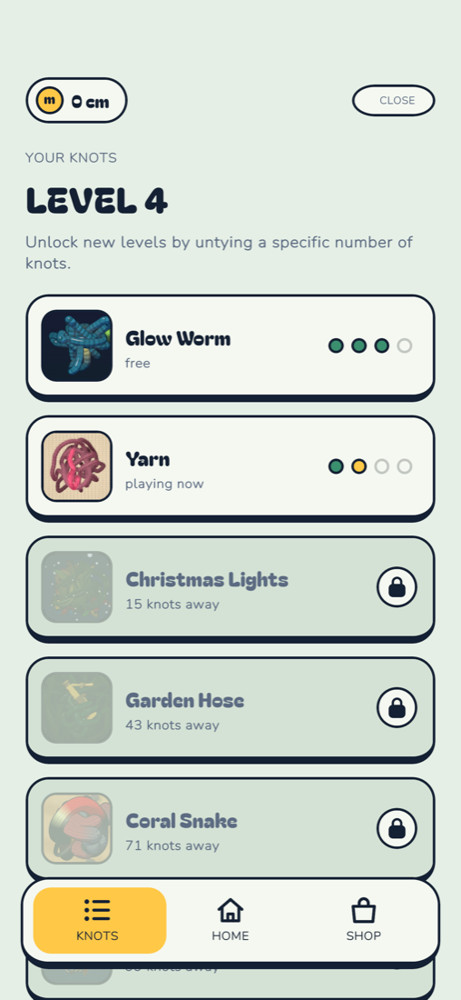
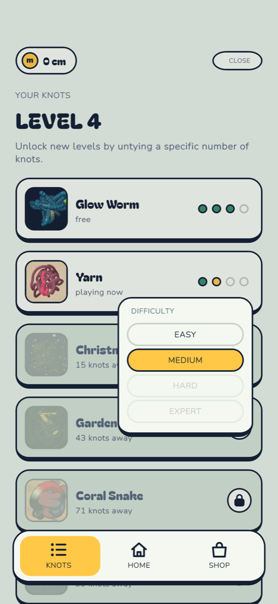
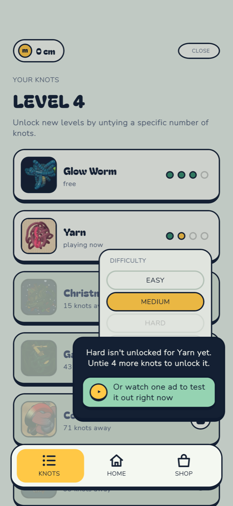
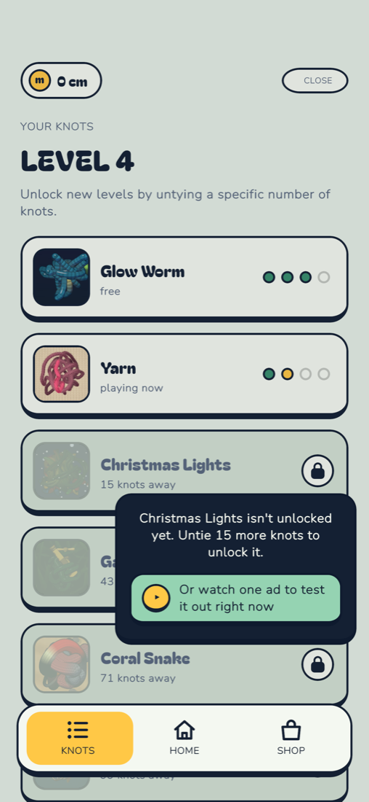
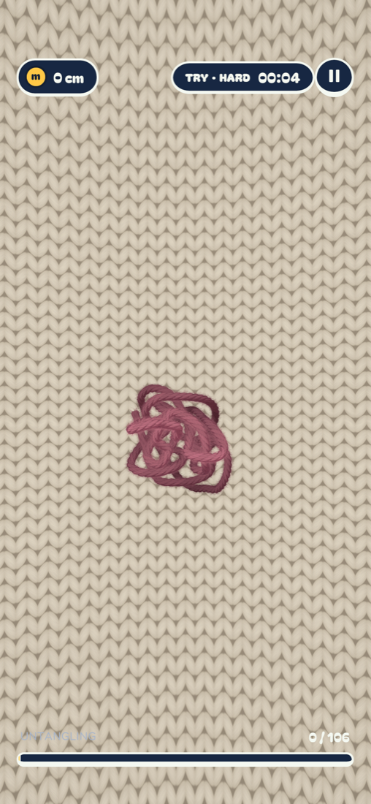
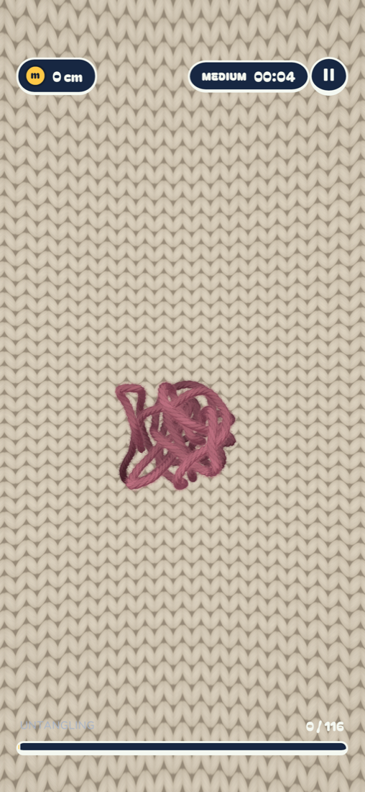
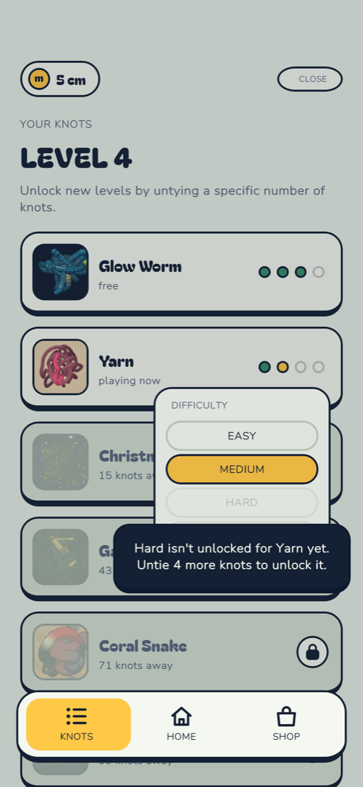

<!doctype html><meta name=viewport content="width=device-width,initial-scale=1"><title>Knot Fun: Your Knots v2</title>
<style>body{font-family:-apple-system,sans-serif;background:#E5EFE6;margin:0;padding:16px;color:#142033}figure{margin:0 0 28px}img{width:100%;max-width:420px;border-radius:16px;display:block;border:2px solid #142033}figcaption{font-weight:700;margin:0 0 8px}</style>
<figure><figcaption>1. Your Knots: no numbers or stars, all cards alike, pips on unlocked strings</figcaption></figure>
<figure><figcaption>2. Tap anywhere on Yarn's card: difficulty selector</figcaption></figure>
<figure><figcaption>3. Tap locked Hard: tip pops up over the selector, with today's ad trial</figcaption></figure>
<figure><figcaption>4. Tap a locked string: same tip, same trial offer</figcaption></figure>
<figure><figcaption>5. Trial run: Yarn on hard (TRY · HARD)</figcaption></figure>
<figure><figcaption>6. Next knot: back to Yarn on Medium</figcaption></figure>
<figure><figcaption>7. Same day, Yarn's Hard again: no second trial offer</figcaption></figure>
